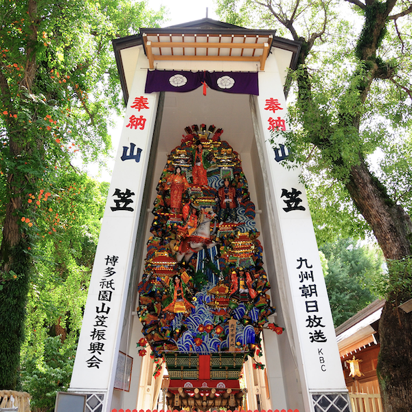

3問答えるチャットボット（チャットボット）（現在鋭意開発中）
開発環境
Python / Flask /openAI / LINE / GitHub / Render / Visual Studio Code
-
概要
制作時間 150時間 URL https://lin.ee/M7p0HT4 ID @246vxnfy
OUTLINEアプリケーションの概要
※現在開発途中のアプリケーションです。
オリジナルアプリケーションとして、PythonとOpenAIを使用したオリジナルチャットボットを作成しLINEで公開しました。
＜オリジナル機能＞
●3問の質問に250文字以内で答えるチャットボット
●4問目以降の質問はOpenAIを使用せず、固定メッセージを表示
●250文字以内の質問に対応するよう設定(日本語以外も対応)
●250文字以上の質問をすると、OpenAIを使用せず、固定メッセージを表示
●回答者は聡明さと優しさを持ち合わせた女性を想定
-
開発に至った経緯
人は時に、相談しにくい悩みや誰にも言えない心の内を持っているものだと思います。
そうした人々が安心して相談できる場所を提供したい、そんな思いから、チャットボットの開発に着手しました。
このチャットボットは、ユーザーが安心して質問できるよう設計されています。
特に、誰かに頼りたいけれど現実的には相談できる相手がいない状況にある人々のために、心の支えとなれるツールを提供したい、と考えて作成しました。
ただ、現在はシステムの維持と改善を行うため、リソースを効率的に使う必要があり、一度に対応できる質問を3問に限定しています。
-
開発で工夫したこと
1つ目の工夫点は、返信メッセージの生成にOpenAI APIを利用した点です。ユーザーからの質問に対して、ただ単に応答するのではなく、親しみやすく、適切な長さの回答を提供するよう設計しました。
2つ目の工夫点は、「質問回数の管理機能」です。この機能により、ユーザーが無制限に質問を送信することを防ぎ、リソースを効率的に使えるようにしています。具体的には、各ユーザーの質問回数を追跡し、質問は3回までに制限しています。この管理には、Flaskのセッション機能とLINE Messaging APIのユーザーIDを組み合わせることで、個別に質問回数をカウントしています。
いずれも、知人5名ほどに実際に利用してもらい、ユーザーヒアリングを行いながら改善を行っています。
-
今後実装したいと思っていること
将来的には、博多弁のような優しい方言を取り入れて、自然で温かみのある会話ができるチャットボットにしていきたいと考えています。
具体的に考えている方法が以下の4点です。
●方言変換のルール定義を用いた簡単な置き換え処理。
●自然言語処理モデルのファインチューニングを通じたより自然な方言応答の生成。
●テンプレートメッセージを事前に準備しておくことで柔軟な対応。
● 方言モードの選択肢をユーザーに提供することで、会話体験をカスタマイズ。
そして、リソースを確保することで、質問回数の制限をなくし、誰でもいつでも気軽に利用できるように広めていきたいと考えています。